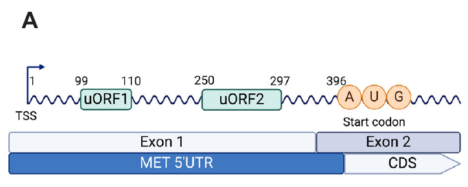
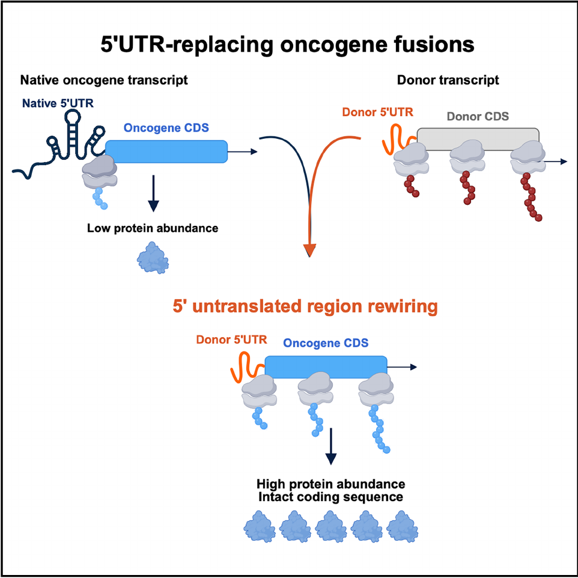
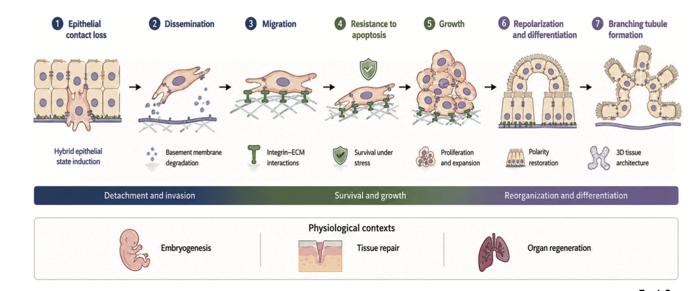
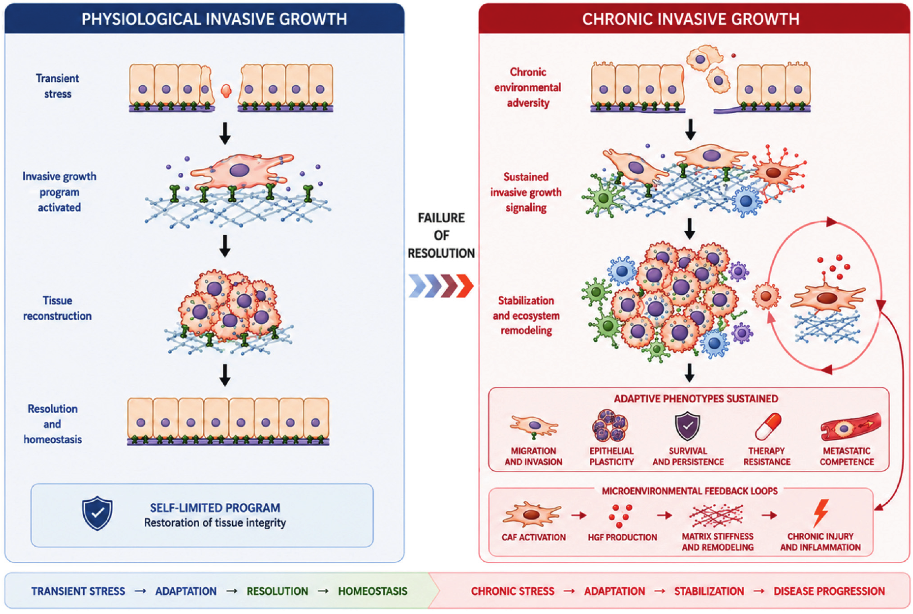

Research / Scientific direction
How does a protective response
become a persistent state?
My research connects the regulation of protein synthesis to cancer adaptation, from the MET 5′UTR and the Janus framework of the ISR to the invasive growth programme.
01 / Mechanism
Stress-responsive translation


Two upstream open reading frames in the MET 5′UTR. Panel A from the published figure; the full study establishes stress-responsive translational regulation.
Cerqua et al. · The EMBO Journal · 2025. Publication ↗ · CC BY 4.0
The integrated stress response changes which proteins a cell produces under adverse conditions. Our 2025 study identified two functional upstream open reading frames in the MET 5′UTR that enable stress-dependent translational regulation. Genetic and pharmacological perturbations linked this mechanism to MET-dependent invasive growth in experimental models.
The EMBO Journal, 2025 ↗02 / Regulatory architecture
Oncogene priming through 5′UTR rewiring


Replacement of the native 5′UTR by a donor-derived 5′UTR rewires translational control, increasing protein output while retaining the coding sequence.
Cerqua et al. · Cell Reports · 2026. Publication ↗ · CC BY 4.0
Gene fusions need not produce a hybrid protein to change oncogene activity. Our 2026 Cell Reports study describes fusions that replace the 5′UTR, increasing protein output while preserving the coding sequence. MET provides the experimental paradigm, with related UTR-replacing events in FGFR1, JAK2 and NTRK2.
The central implication is that changes outside a protein’s coding sequence can prime oncogene expression by rewiring its translational control.
Cell Reports, 2026 ↗03 / Stress & cell states
Review · Life Science Alliance 2026
The Janus framework of the ISR

The proposed framework contrasts a transient, homeostatic ISR with persistent maladaptive regimes, including non-canonical routes and decoupled outputs.
Altintas et al. · Life Science Alliance · 2026. Publication ↗ · CC BY 4.0
Created with BioRender.
In this review, we argue that chronic ISR cannot be understood through duration alone. The central question is whether persistent stress responses reflect a qualitative change in regulation, from homeostatic feedback toward maladaptive cellular states.
The Janus framework connects the molecular mechanisms of stress-responsive translation to the broader question of persistence and reversibility.
Life Science Alliance, 2026 ↗04 / Conceptual framework
Invasive growth and failed resolution
What is invasive growth?
Invasive growth is a coordinated biological programme that enables cells to colonize tissue and remodel its architecture.
The concept brings together cell dissociation, motility, survival, proliferation, extracellular matrix (ECM) remodeling and morphogenesis. Its defining feature is their coordination in space and time: cells must move into a tissue, survive there, expand and organize their interactions with the surrounding matrix to build or reshape tissue architecture.
Why coordination matters
Each activity contributes a necessary capacity, but isolated activities do not achieve effective tissue colonization:
- Proliferation without migration produces tissue expansion.
- Migration without survival produces attrition.
- Matrix degradation without polarity control produces tissue disruption.
Invasive growth emerges when these processes work together as a coherent programme. It therefore encompasses more than movement through a tissue: it connects invasion with survival, growth, spatial organization and morphogenesis.


The behaviours illustrated can overlap; the figure is not a fixed sequence of obligatory steps.
Altintas & Comoglio · Trends Open · 2026. Source PDF ↗ · CC BY 4.0 · Created with BioRender.
In normal physiology
During development, tissue repair and regeneration, cells temporarily mobilize these behaviours to reshape or restore tissue. The programme normally resolves as tissue organization and homeostasis are recovered.
In cancer
Tumour cells can deploy the same adaptive repertoire in a pathological context. Invasion is one component; the broader programme also includes survival, plasticity and growth.
Why study its persistence?
Our Trends Open opinion proposes that cancer progression can be understood through the chronic stabilization of invasive growth. The question shifts from what activates the programme to what prevents its resolution: continued environmental signals, maintenance of acquired cellular states, or selection of cells able to sustain them.
What turns a temporary capacity to adapt into a lasting disease-associated state?
A conceptual framework proposed in the opinion below, with mechanisms and predictions to test.


A conceptual model contrasting a self-limited adaptive programme with chronic stabilization. The right panel illustrates environmental reinforcement; state maintenance and selection are additional proposed routes.
Altintas & Comoglio · Trends Open · 2026. Publication ↗ · CC BY 4.0
Created with BioRender.
In our Trends Open opinion, we propose that cancer progression can be understood as the chronic stabilization of a normally transient invasive growth programme. This framework asks why coordinated adaptive behaviors persist, rather than considering each behavior in isolation. It is a conceptual model to test.
Trends Open, 2026 ↗SATURN / Proposed independent research programme
Understanding persistence.
Finding routes to resolution.
Building on this work, the proposed direction is to investigate how translational regulation connects environmental stress to durable adaptive states.
Initiation
Which regulatory changes prime cells to respond?
Stabilization
What maintains an adaptive programme after its initial trigger?
Reversibility
Can persistent states be redirected toward resolution?
Research vision in development. This presentation does not indicate an awarded ERC grant or secured funding.